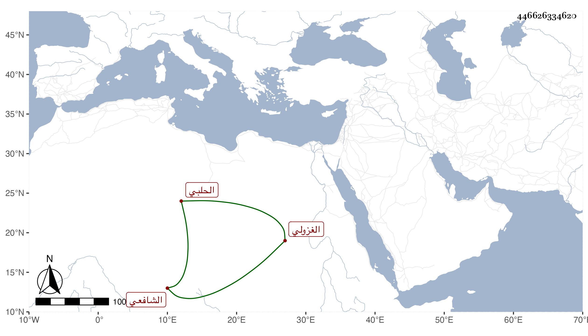

0902Sakhawi.DawLamic.ITO20230111-ara1.EIS1600.446626334620
Biography ID: 446626334620
731
محمد بن عمر الشمس الغزولي الحلبي الشافعي ويعرف بابن العطار ولكنه بالغزولي أشهر . ممن أخذ عن عبيد البابي وكتب غالب تصانيفه وقرأها عليه وخلفه في حلقته بالجامع احتسابا بحيث انتفع به غالب الحلبيين كالسلامي وابني ابن النصيبي كل ذلك مع اشتغاله بالتكسب بسوق العبي وتنزيله في بعض الجهات مات فيما بين الستين والخمسين رحمه الله .
